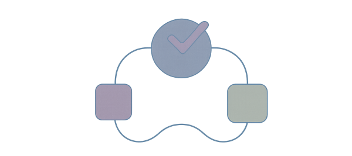

I can help bring quality checks into the design and development cycles.
I cater forcompanies and projects of any size, delivering quality to the tightest of timescales.
The answer is, a lot more than many think. Testing is a large area of software development, concerned with many aspects of quality in product development and production.
We can work out timescales and tasks, depending on your needs and budget. Whether you want help getting automation into your pipeline, or need performance checks, I can deliver results. :contentReference[oaicite:3]{index=3}
This won't be done in isolation — it's not the 1990s. The way of working today is about partnership and engagement with your team to ensure you get exactly the input and support you need.
If you'd like support improving your testing or engineering pipelines, feel free to contact me: